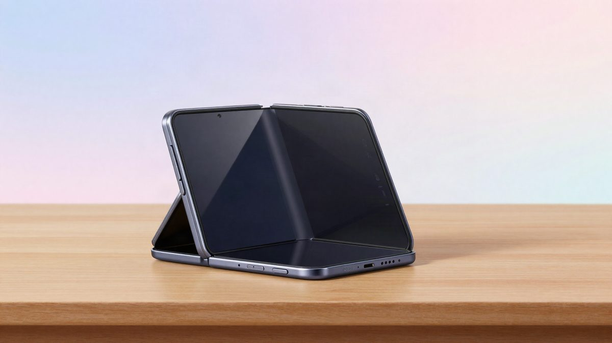

Windows 11 pokrenut na Appleovom sklopivom iPhoneu: Googleov Ammaar Reshi objavio je projekt WindowsiOS

Ammaar Reshi iz Googlea objavio je open source projekt WindowsiOS, koji Windows 11 za ARM pokreće izravno na Appleovom sklopivom iPhoneu "iPhone Duo". Windows radi lokalno u virtualnom stroju, bez jailbreaka, a glavni dio posla Gemini je prema Reshiju obavio za otprilike dva sata. Rezultati testova brzine nisu objavljeni.
Ammaar Reshi, voditelj proizvoda i dizajna u Google AI Studiju, objavio je open source projekt WindowsiOS. Uz pomoć Geminija on pokreće Windows 11 na Appleovom najnovijem sklopivom iPhoneu, modelu "iPhone Duo". Reshi je podijelio i demonstracijski video.
Projekt je ARM verzija Windowsa 11 24H2 koja radi u virtualnom stroju izravno na uređaju. Ne radi se o cloud streamingu ni o udaljenoj radnoj površini. Windows se izvršava lokalno, a upravlja se dodirom.
Prije nekoliko tjedana neki je developer uz pomoć AI-a pokrenuo iOS 26 na Microsoftovom ugašenom Surface Duo 2. Reshi je sada napravio obrnuto.
Ponašanje ovisno o položaju zaslona
Windows nije dizajniran za sklopive telefone, ali projekt iskorištava oblik uređaja. Kad je iPhone Duo potpuno otvoren, Windows desktop zauzima cijeli veliki zaslon. U poluzatvorenom položaju sustav prelazi na raspored nalik laptopu: gornja polovica prikazuje desktop, a donja virtualnu tipkovnicu i touchpad.
Tipkovnica ima šest redaka, tipke F1 do F10, tipku Copilot i pune tipke sa strelicama. Touchpad podržava multitouch geste. Unutarnji zaslon ima oko 7,6 inča, pa uređaj nije zamišljen za dulji rad.
Kako je izvedeno
Projekt za Windows gradi virtualno hardversko okruženje s firmwareom, pohranom, mrežnim adapterom, USB ulaznim uređajima i audio hardverom. Windows tako vidi standardno računalo. Primjerice, dobiva virtualni Ethernet adapter pa internetu pristupa preko mrežne veze iPhonea.
Apple nema Windows drivere za zvuk, pa je tim koristio virtualni audio uređaj koji radi s ugrađenim Windows driverima. Zvuk izlazi kroz zvučnik iPhonea, a mikrofon telefona šalje audio natrag u Windows.
Uređaj nije jailbreakan. Kompatibilnost je riješena čisto softverski, uz JIT prevođenje ARM64 koda, čime se zaobilazi Appleov ograničeni okvir za hardversku virtualizaciju. Nakon isprobavanja korisnik se može vratiti u običan iOS, bez posljedica za aplikacije i podatke.
Podržan je i Microsoftov Prism, pa bi se dio x86 i x64 programa trebao moći pokrenuti. Autori naglašavaju da ne rade sve aplikacije i igre.
Performanse i zahtjevi
Reshi tvrdi da je brzina bliska nativnoj, ali konkretni rezultati testova nisu objavljeni. Na pitanje koliko je AI agentu trebalo, odgovorio je da je glavni dio posla obavljen za otprilike dva sata.
Instalacija zauzima oko 12 GB. Za vlastitu instalaciju treba Mac s Apple Silicon chipom, razvojni alati i Windows 11 ARM image. Projekt koristi optimiziranu sliku u kojoj je, radi manje potrošnje resursa, isključen dio funkcija, među njima Defender u stvarnom vremenu i pozadinski Windows Update.
Projekt je još daleko od komercijalne uporabe.
Izvor: cnBeta